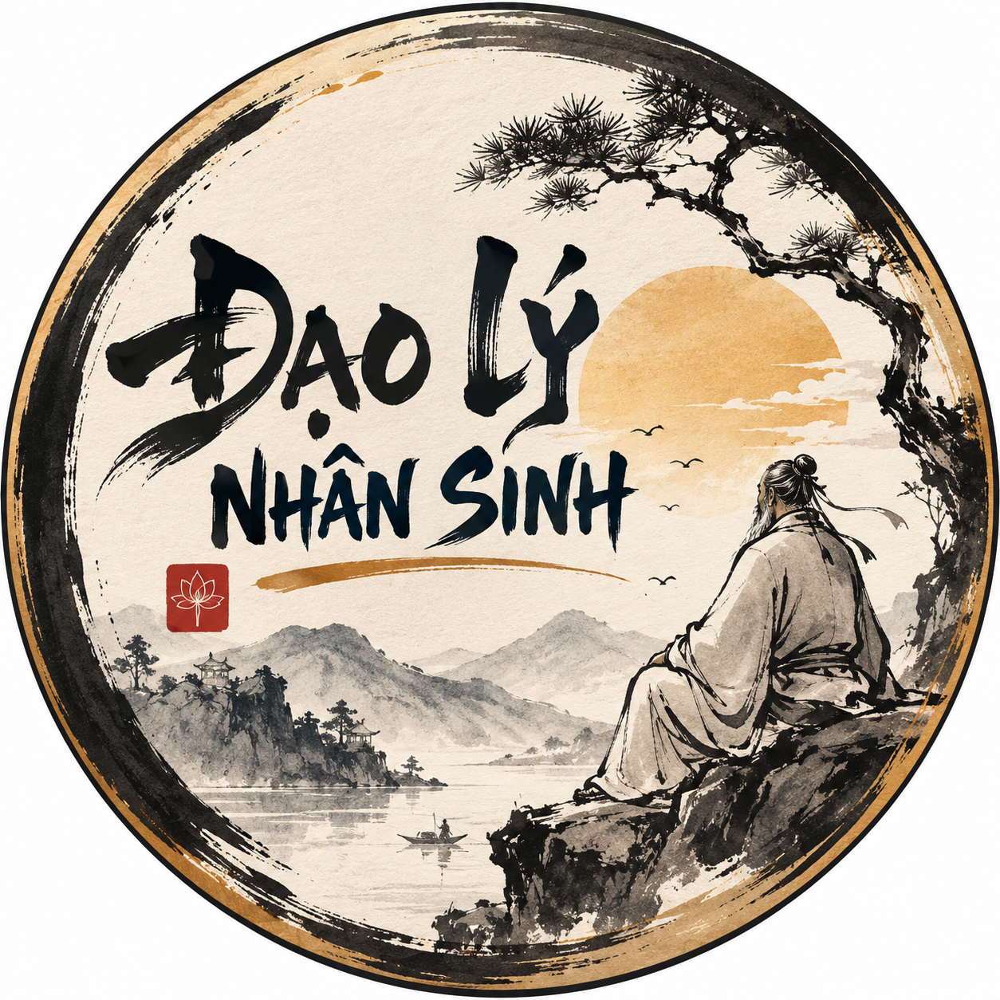

PH
'">
PHÚC HỌC ĐIỀU HAY
Trạm Đăng Bài Mobile • Cả Video & Ảnh Dạy Con
🎬 ĐĂNG VIDEO (
0
)
📸 ĐĂNG ẢNH (
0
)
Đang tải...
0%
#---
Phúc Học Điều Hay
⬅️ Trước
Sau ➡️
Đang nạp bài viết...
👁️ Xem Drive
📥 Tải Drive
📘 Caption Facebook
📌 Bình Luận
🎵 Caption TikTok
💬 Caption Zalo
▶️ Caption YouTube
📄 Mô Tả YouTube
🔗 Link AFF
🛒 Gợi ý AFF
🔴 ĐÃ ĐĂNG BÀI
Khung Xem Trực Tiếp:
Mở tab Drive ↗
⏳ Chưa đăng (
0
)
✅ Đã đăng (
0
)
Tất cả (
0
)
STT
Tiêu đề bài viết
Trạng thái
✓ Đã sao chép!